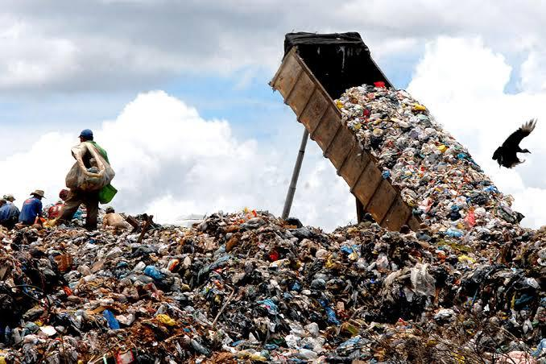
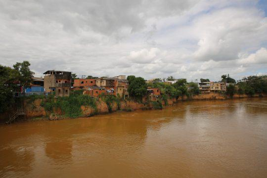
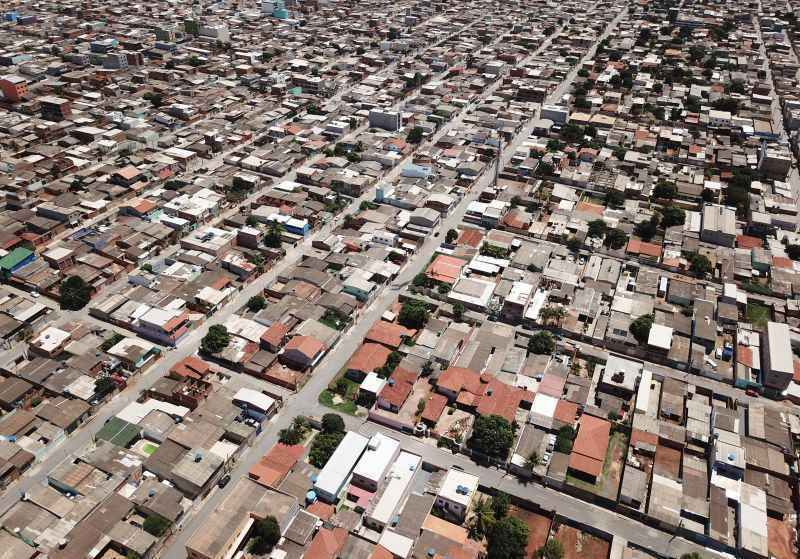
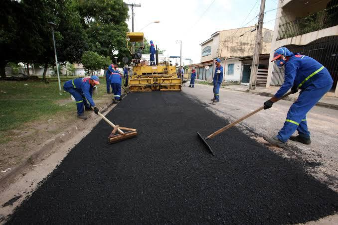
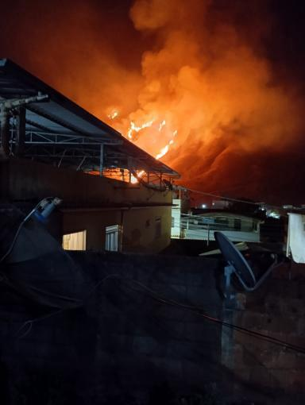
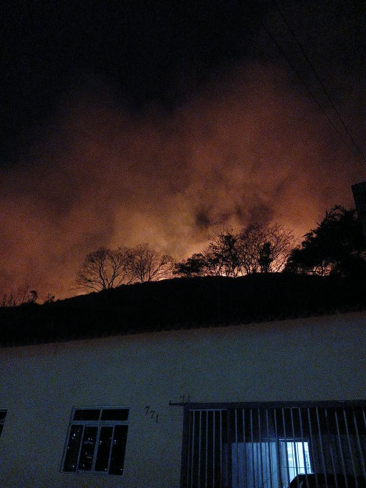
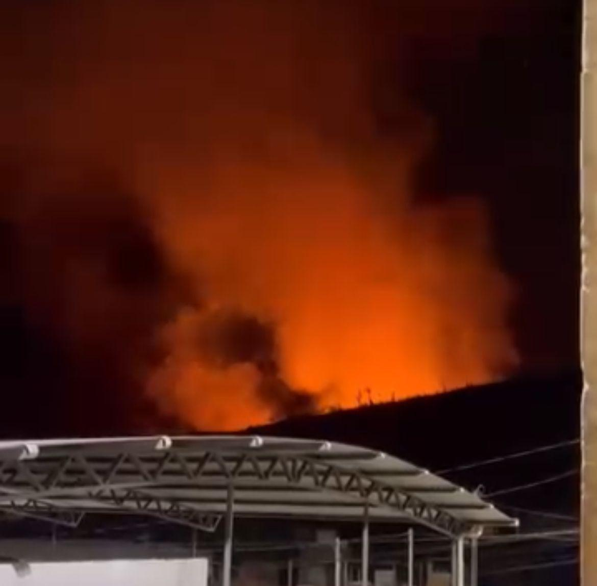

Você sabe o que é Justiça Ambiental?
Ela trata do tema de que as questões ambientais não afetam a todos da mesma forma. Cada pessoa é atingida de maneira diferente e reage de forma distinta.
Por isso, batalhamos pela equidade ambiental.
Problemas Ambientais de Espera Feliz
Espera Feliz tem apresentado diversos problemas que afetam a qualidade de vida da população e, principalmente, o planeta.
Os principais problemas têm sido:
- Faixas de solo exposto: perda de nutrientes, aumento da erosão, redução da capacidade de retenção de água e diminuição da produtividade agrícola.
Imagem da entrada de Espera Feliz a seguir:

- Lixão a céu aberto: gera chorume, um líquido tóxico que contamina o solo e o lençol freático, comprometendo a qualidade da água.

- Construções irregulares nos leitos dos rios: proibidas pela Lei nº 14.285. Causam alteração do fluxo natural dos rios, poluição, destruição de habitats e representam risco extremo.

- Falta de arborização urbana: aumento da temperatura, maior poluição do ar, problemas de drenagem e impacto na fauna e flora urbanas.

- Impermeabilização do solo: aumento das inundações, diminuição da biodiversidade, escassez de água e agravamento da poluição do ar.

- Muitas queimadas: poluição do ar e da água, perda de biodiversidade, mudanças climáticas, doenças respiratórias e danos à infraestrutura.
Imagens da queimada do ano de 2024 em Espera Feliz


